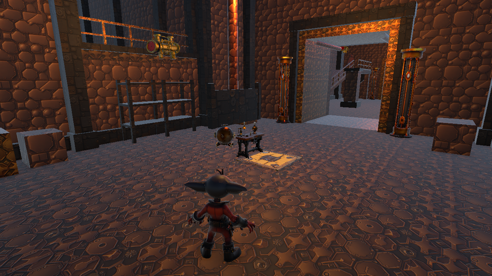
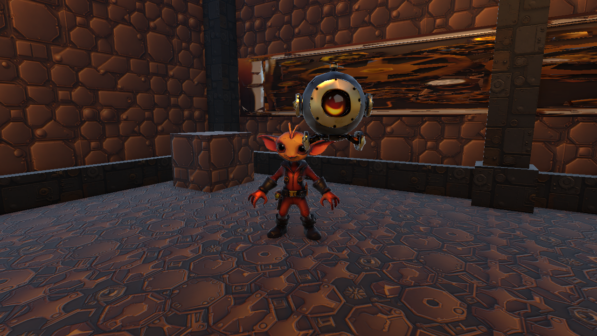
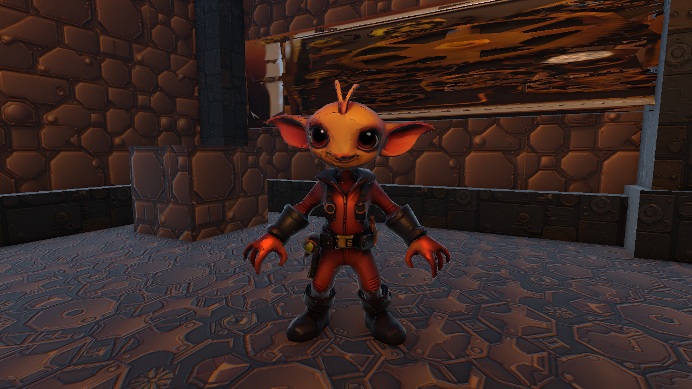
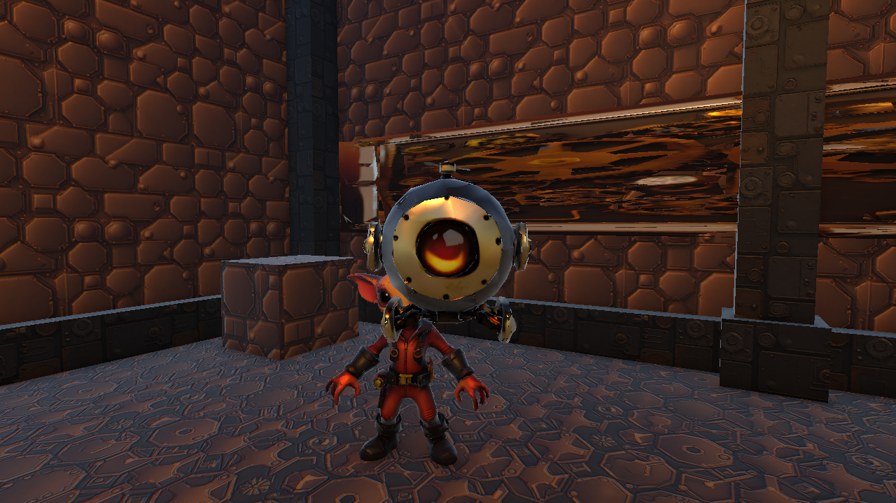

Conceitos aprovados (FLUX.1-dev FP8, Dez A com mãos simétricas de 4 dedos + Porca D) -> TripoSG -> TripoSF 512 -> Hunyuan3D-Paint -> 05_trellis_pbr -> pack_glb -> importados in-place na Oficina Z1.



